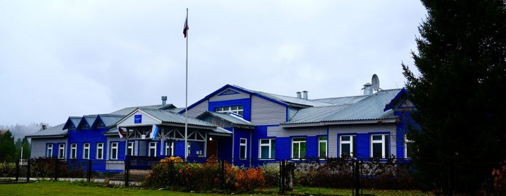
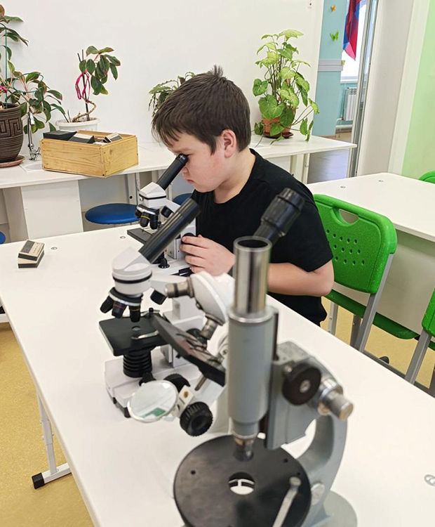
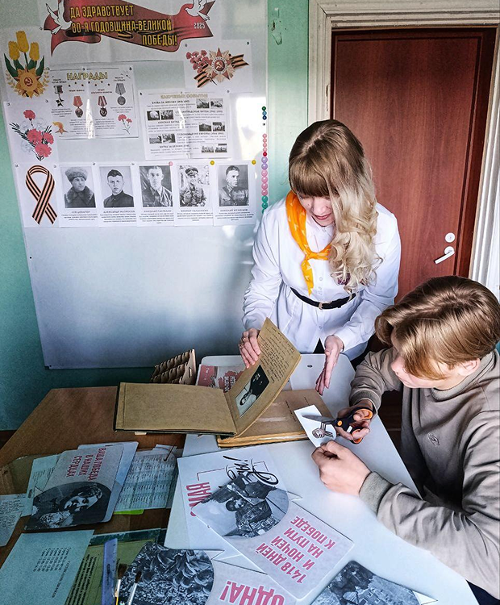

Тондошенская основная общеобразовательная школа — это место, где дети получают прочные знания по всем предметам и учатся применять их в жизни.
В нашей школе работают внимательные учителя, которые помогают каждому ребёнку раскрыть способности. Мы создаём атмосферу, в которой ученики не боятся задавать вопросы, пробовать новое и находить своё.
Основная задача школы — дать каждому ученику прочную базу знаний по всем предметам. Мы развиваем любознательность, самостоятельность и творческий подход — качества, которые пригодятся в любой профессии.
В школе дети не просто изучают теорию, но и учатся работать в команде, находить решения в сложных ситуациях и не сдаваться перед трудностями. Всё это — часть подготовки к взрослой жизни.

Программа обучения в школе
Тондошенская основная общеобразовательная школа работает по государственным образовательным программам. Обучение проходит в 1–9 классах. Программа включает обязательные предметы: русский язык, математику, литературу, историю, естественные науки, иностранный язык и физическую культуру.
Помимо обязательных предметов, в школе есть дополнительные занятия: творческие кружки, спортивные секции и внеклассные мероприятия. Все ученики получают поддержку учителей и могут раскрыть свои способности в разных областях.

Мероприятия и выставки
В школе регулярно проходят мероприятия: открытые уроки, встречи с интересными людьми, конкурсы и выставки работ учеников. К нам приходят гости из других школ и организаций, чтобы поделиться опытом.
Мы также проводим школьные концерты, спортивные соревнования и творческие вечера. Такие события открыты для всех учеников и их родителей.
В школе есть актовый зал и выставочное пространство, где проходят концерты, выставки и встречи. Работы учеников выставляются в холле и коридорах. Информация о предстоящих событиях публикуется на сайте и в школьных объявлениях.